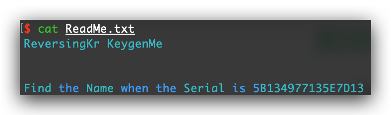
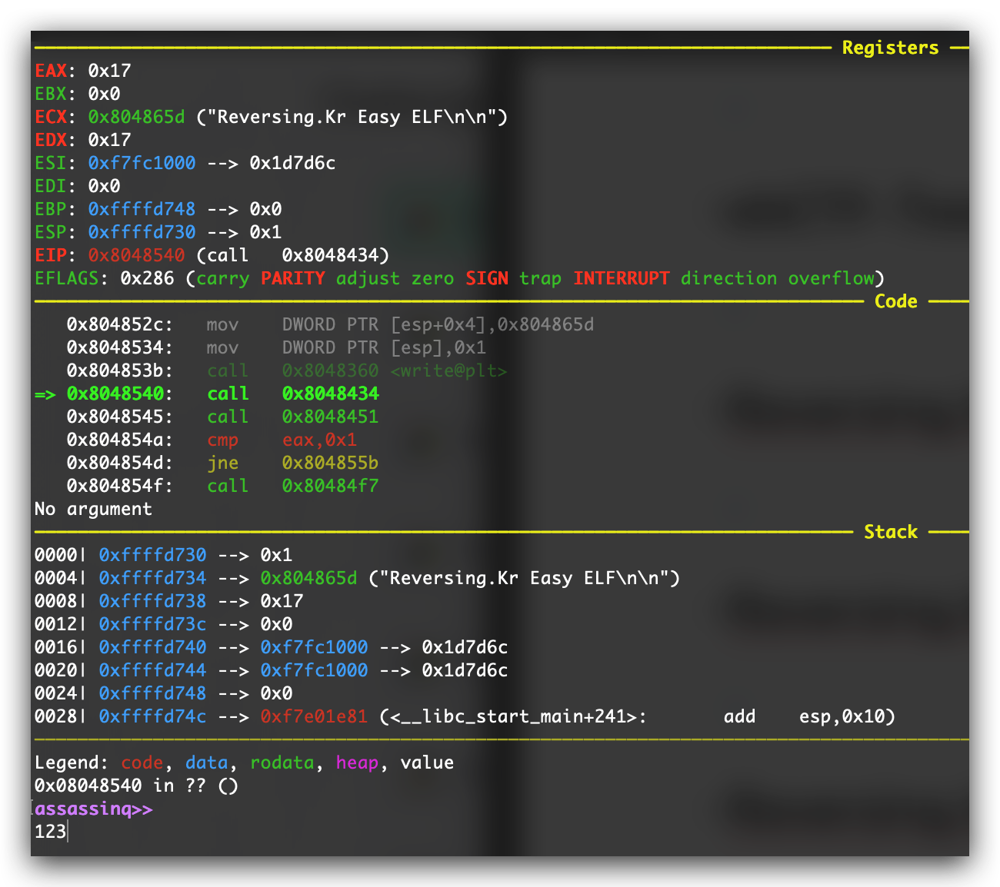
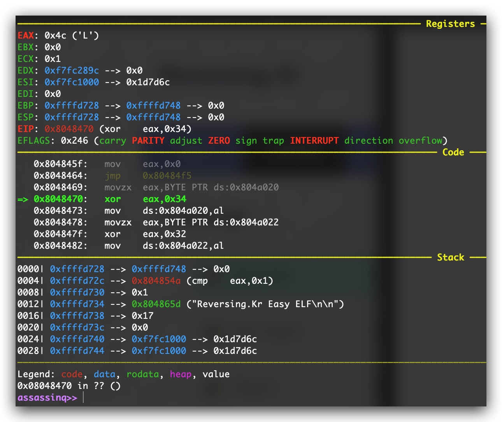
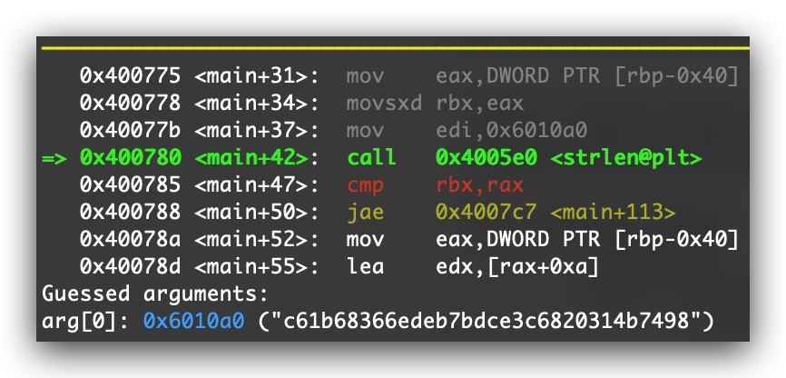

安全软件开发技术期末作业
合天网安实验室-逆向200
首先查看文件类型：
尝试运行程序，要求输入第一个密码：
第一个密码在OD里调试很容易得到：
接下来要求输入第二个密码：
在调第二个密码的时候遇到了INT3，然后在EBX处看到了kernel32中的AddVectoredExceptionHandler。推测应该是对这里做了反调，把原本这里的函数注册到了异常处理函数中。
然后重新调试一遍，在前面00401AF9处，可以看到把0040157F处的函数注册到了AddVectoredExceptionHandler这个API上：
跟到0040157F这边下个断点，然后进到里面的一个check函数，可以分析得出，第二个密码将输入和2逐位异或，与内存0029FDCC处的字符串相比较：
既然是异或，只需要同样的操作就能逆过来：
验证一下结果：
ebCTF-Teaser-BIN100-Dice
首先查看文件类型：
尝试运行一样，看看是一个什么样的程序：
是一个摇骰子的程序，判断应该是如果能摇到所有要求的数字就能成功。拖进OD后查看一下字符串：
通过字符串基本可以判断出，要求摇出3-1-3-3-7五个数字，就能成功。那么通过字符串定位到判断check的代码段，然后patch掉失败后跳转的语句，就可以绕过所有的check。第一处check：
第二处check：
第三处check：
第四处check：
第五处check：
将所有修改过的部分保存到文件，并运行程序得到flag：
Reversing.Kr-Easy_KeygenMe
首先查看文件类型：
题目要求：

给了一个Keygen程序，我们需要根据给出的序列号找到对应的名称：
拖进OD进行调试。首先随机输入一个Name，程序一开始通过字符串操作指令REPNE得到Name的长度并存入ECX：
接下来将输入的Name和栈上存储的key值（“\x10\x20\x30”）进行逐位异或，得到的结果转成十六进制后以字符串的形式添加到内存0018FE84处：
然后将得到的Serial和输入的Serial进行比较：
用python可以写出生成Serial以及生成Name的脚本：
运行得到结果：
Reversing.Kr-Easy_UnpackMe
首先查看文件类型：
题目要求是找到OEP，flag的格式即为OEP的地址：
用Exeinfo查壳，没有检测出具体是什么壳，也不知道是用什么编译器写的，但根据题目要求显然是有壳的：

脱壳的步骤比较简单，采用单步跟踪法，如果有向上的跳转，就f4到下一条指令，其他情况下就一直f8单步往下走。一直到0040A1FB处，发现有一个大跳转到00401150：
跳过去看，可以判断出就是OEP了，那么flag即为00401150：
把脱壳后的程序用Exeinfo打开，可以看到程序是用Visual C++ 6.0写的：
Reversing.Kr-Easy_ELF
查看程序类型，发现是ELF：
使用gdb进行调试，基本上可以判断出几个函数：

首先单步跟到第一个8048434，可以看到就是一个scanf读了输入的数据：
然后进到第二个函数8048451，首先将0x804a021处的一个字节和0x31进行比较：
查看一下内存中的内容，发现0x804a020处存的是我们输入的字符串，那么接下来过程中对每一个进行比较的字节的位置就能判断了：
然后根据上面的分析，将第一个字节和0x34进行异或：

然后将第三个字节和0x32进行异或：
然后将第四个字节和0x88进行异或：
将第五个字节和0x58进行比较：
第六个字节确保是\x00，那么可以判断正确的字符串应该大小是5：
在异或后的第三个字节要等于0x7c：
在异或后的第一个字节要等于0x78：
最后一个地方，异或后的第四个字节要等于0xdd：
用radare2看一下整个函数的全貌，直接对这个逆也可以：
异或的是对称的，直接同样的异或操作就能逆回来：
检验结果：
Reversing.Kr-Replace
题目给的是一个输入字符串的程序，如果输入错误就会直接crash。拖进OD搜索字符串，定位到输入正确的位置：
然后往上看，可以定位到程序输入，也就是GetDigItemInt处，这个API只能读入int整型：

测试输入123，即十六进制下的的7B，下一条指令将7B赋给了内存0x4084D0处：
接下来call函数0040466F，进入函数，大概可以分析出这个函数把我们的输入和0x619060EB相加，然后前后累计inc了四次，所以是将内存中的值加上了0x619060EF：
在call完0040466F后，内存中的值变为了0x60160646：
然后再下方会有个大挑战，执行一段代码，执行完后返回00401071，然后会跳过Correct的界面，这里有一些让人疑惑，先跳到00404690处看看：
看到00404690这里把内存中的值赋给了EAX，然后将0x40466F处的值加上0xC39000C6，然后call了0040466F：
发现在加上0xC39000C6后，0040466F处的代码变成了把EAX上的值赋为0x90然后返回。查看机器码可以知道0x90其实是nop的机器码。然后联系到上面跳过正确的jmp，可以想办法把EAX的值设为指令的地址，然后就可以nop掉jmp。可以看到这边call了两次0040466F，那么可以连续nop掉jmp指令的最后两个字节：
然后根据前面的分析，确定我们要修改的地址为00401071，可以计算出需要输入的数字（需要溢出）：
测试结果：
SharifCTF-2016-Getit
查看文件，是64位的ELF，尝试运行程序，没有任何反应：
使用gdb进行调试，在一开始，调用了strlen，有一串像是某个哈希的字符串：

然后对这个字符串进行循环操作，eax存储了下标，and用来判断此时下标的值为奇数还是偶数：
如果此时下标的值为奇数，会将对应字符的ASCII码减一：
如果下标为偶数，同理对字符的ASCII码进行加一操作：
进行完这个操作后，开始将经过变化的字符串逐位赋值到内存0x6010e0中：
查看内存的值，发现就是flag：
使用python用同样的操作进行计算：

得到flag：
BUUCTF-reverse1
查看文件，没有加壳，使用c++写的：
用x64dbg加载，先定位到main函数：
然后搜索字符串，发现可能是flag的字符串：
定位过去后，发现就是进行了一个strcmp，然后判断输入是否正确：
flag正确：
BUUCTF-reverse2
查看文件，是64位的ELF：
用objdump反编译一下，可以快速地定位到有一处scanf和strcmp，应该就是对输入和内存中的字符串进行比较：
使用gdb查看对应字符串的值：
得到flag，但输入错误。可能在之前对这个地方的值进行了变换，还是用gdb调一下。直接在strcmp下断点（gdb -ex "b *0x40083f" -ex "run" ./reverse_2），得到了一个不一样的字符串：
flag正确：
红帽杯-2019-xx
查看文件，没有加壳，而且使用c++编写：
用x64dbg调试。一开始对输入的字符串进行了判断，如果不等于0x13会提示error：
接下来将前四个字符取出，并保存在内存中：
后面对调用了一个函数，对输入进行了加密，动态调比较痛苦，直接用IDA查看，通过0x61C88647以及下面的移位变换可以判断是tea加密算法，再根据题目判断应该是xxtea。被加密的字符串是我们的输入，key是前四个字符：
接下来对加密后的结果进行了简单的顺序变换。然后循环遍历每个密文，将下标除3的商作为异或的次数，商为几，就从头开始取几个字符对当前字符逐个异或。这两部操作显然都是可逆的：
接下来用IDA动态调一下。在call加密函数时，可以看到传入的参数里有我们输入的字符串，以及前四个字符：
然后对密文进行了顺序的调换：
最后进行逐位异或。这边除3的操作在汇编中进行了优化，变成了乘上0x55555556，imul后的低32位存储在eax；高32位存储在edx，即除3后得到的商：
最后给一些变量赋值，然后将前面得到的结果和其比较。这些变量的值就是密文，只要将内存中的这串密文dump下来就能解flag：
最后python实现一下解flag的过程。首先实现xxtea的解密函数：
然后将密文按照先前分析的步骤逐步逆推：
得到flag：
验证：